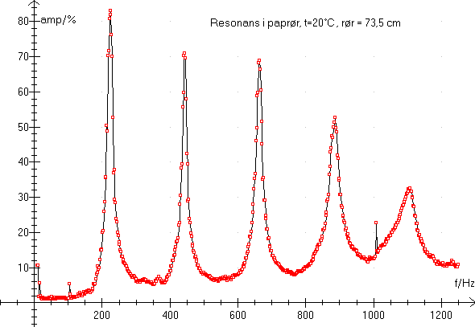

Se også Håndholdte instrumenter fra IMPO
Menu i Datalyse:
Accelerationsmålinger
fx frit fald
Halveringstid
Halveringstykkelse
Poissionfordeling
Radon målinger
AC7E er en »lillebror« til MC24E, idet AC7E har nogle af MC24E's funktioner.
Baudrate 1200, ingen paritet, 1 stop, 8 databit. Kommando "V" for version.
AC7E Fysik-/elektroniktæller m/indbygget intelligens og hukommelse.
Lillebror til tæller MC24 - IMPOs sidste nyhed.
Forsynet med 7-cifret LED display. Opløsning ned til 10 msek. på tidsmålinger. Automatisk følsomhedsregulering og optimal støjfjernelse med AGC reguleret indgangstrin med hysteresebånd i indgang A.
Menu i Datalyse:
- Grafisk måling
- Vis måling
Multimeter, termometer og pH-meter i ét apparat.
Mindste tid 0.5 sekund.
Du indstiller knapperne på apparatet og Datalyse aflæser indstillingen og tilpasser koordinatsystemet.
Baudrate 1200, lige paritet, 1 stop, 7 databit. Kommando "V" for version.
DMI24 Demo-multimeter m/topdisplay
Til måling af strøm, spænding, modstand, pH og temperatur. Måleresultater vises af et 3½ digit, 45 mm højt LED display. Bagudrettet 13 mm LED display giver læreren mulighed for at følge udlæsningen uden at skulle stå foran instrumentet.
Menu i Datalyse:
Multimeter, termometer og pH-meter og manometer i ét apparat. Dvs. metret har 4 separate indgange til måling af
Ved grafisk måling vælges en af funktionerne. Indstil drejeknappen på apparatet til den ønskede funktion. Ved måling i multitabel kan alle 4 parametre måles samtidigt. Hvis man vil måle spænding, strømstyrke, modstand eller spænding, skal drejeknappen indstilles på den ønskede funktion.
Baudrate 9600, ingen paritet, 1 stop, 8 databit. Kommando "V" for version. Mindste tid 1 sekund.
Menu i Datalyse:
Grafisk måling af én valgt parameter.
Vis måling
Multitabel, der måles på én til 4 indgange.
Loggen læses. Apparatet fås både med og uden log.
Loggen indstilles.
DT4 antyder, at metret har 4 temperaturindgange.
DT4 har også et relæ, som styres af temperaturen på indgang 1. Denne funktion vil komme til i næste udgave af DT4 og af datalyse.
Loggen kan indeholde max 250 linier. Tidsstemplet konverteres af datalyse til en løbende tid.
Baudrate 1200, ingen paritet, 1 stop, 8 databit. Kommando "V" for version.
Når loggen læses stilles baudraten til 9600. Det ville ellers vare for længe at læse loggen, nu tager det ca. 30 sekunder.
DT4, 4-kanals NiCr.Ni temperaturmåler med mikroprocessor
Visning af én temperatur ad gangen, men apparatet scanner konstant alle 4 indgange. Foruden de 4 temperaturer kan der vises 2 differenstemperaturer. Interface porten kan benyttes som printerport, idet apparatet kan udskrive de målte værdier med et valgbart interval.
NiCr-Ni Trådføler, isoleret med glasvæv.
Standardlængde: 2m - dimension 2x0,5Ø - hurtig responstid.
Menu i Datalyse:
Grafisk måling.
Vis måling.
Multitabel, hvor alle parametre måles til tabel.
Oversigt, her gemmes målingerne ikke.
Indstilling af loggen, alle parametre indstilles.
Læsning af loggen.
Loggen placeres i tabellen, du kan efterfølgende lave grafer.
Baudrate 1200 (9600), ingen paritet, 1 stop, 8 databit. Kommando "V" for version.
9600 i parentes betyder, at indstillingen ændres af datalyse ved opstart. Det ville ellers vare for længe at læse loggen, nu tager det ca. 30 sekunder.
Bemærk, at der ikke er en menu (kommando) til sletning af loggen, men at denne nulstilles, når ny måling starter efter indstilling af log.
EM1 Mikroprocessorstyret energimeter med datalog
Forsynet med 4-cifret LED lysdiode udlæsning. Softwaren foretager alle omskiftninger af måleområder både på spændings- og strømmålingen samt fasevinkel. Fuldautomatisk omskiftning mellem måling på bagsidens tilslutning af f.eks. 220 VAC, eller forpladens tilslutning af sikkerhedsspændinger.
EM1 E Mikroprocessorstyret energimeter med datalog.
Valgmulighed for udlæsning af de direkte måleværdier på strøm og spænding eller de beregnede værdier af tilsyneladende effekt (VA), fasevinkel (f), frekvens(Hz), virkeeffekt(W) og energi (Ws, Wh) og tilhørende tid (s(Ws), h(Wh)).
Kan aflæses indtil 8 parametre samtidig på displayet, samt mulighed for at vælge mellem 5 fuldtud brugerdefinerede display.
Menu i Datalyse:
- Grafisk måling
- Vis måling
Der kan måles frekvens.
Dette er en tidligere udgave af FD4E.
Bemærk, at det tager lang tid at måle frekvenser mindre end 1 Hz (flere sekunder).
Baudrate 1200, lige paritet, 1 stop, 7 databit. Kommando "V" for version.
Menu i Datalyse:
Grafisk måling af frekvenser.
Vis måling
Kontrolpanel, til styring af alle funktioner på FD4E.
Baudrate 1200 (9600), ingen paritet, 1 stop, 8 databit. Kommando "V" for version.
9600 i parentes betyder, at indstillingen ændres af datalyse ved opstart. Det ville ellers vare for længe at styre FD4E i kontrolpanelet.
Kontrolpanelet har 3 faneblade:
Indstil:
Her kan man indstille alle funktioner på FD4E. Det er nemmere (hurtigere) at indstille FD4E på en bestemt frekvens fra kontrolpanelet end vha. knapperne på fronten.
Man kan styre overtonerne på en stående streng ved først at indtaste frekvensen og så klikke på »Overtoner«. Herved indstilles på 1. overtone, 2. overtone... 9 overtone og atter på grundtonen.
Gæt en tone:
Knappen »vælg tone« indstiller FD4E på en tilfældig tone, som man så kan prøve at gætte.
Fd4E har ikke hardwaresweep, men man kan lave et sweep fra Datalyse. Når man har klikket på »Start sweep« sender Datalyse en frekvenskommando til FD4E hver gang der er gået et tidsstep (minimum: 0,05s, maksimum: 5,0 s). Før start, skal man indstille FD4E til Amplifier og en passende lydstyrke. Samtidig med sweepet kan der måles lyd vha. en mikrofon tilsluttet pc'ens lydkort. Dette kan fx bruges til at vise resonans i et paprør:

FD4E Funktionsgenerator, kan fås med peak og amplitudemåling
Mikroprocessorstyret funktionsgenerator med 4-cifret LED-display. Hurtig og nem til indstilling af frekvens, amplitude og funktion via drejeknap (endeløs) og trykknapper el. via interfacen. Kan udbygges med kredsløb og software til måling af spids til spids-værdi på et eksternt signal, samt amplitude-modulation.
MC24 version 2.3 og MC24E, version 4.02. Enkelte menupunkter findes ikke på MC24.
Menu i Datalyse
- Elastisk stød...
- Uelastisk stød...
- Start A, stop B, tAB
- Start A, stop B
- Passagetid på A
- Omløbstid på A
- Svingningstid på A
- Frekvens
- T½ counting...
- X½ counting...
- Poisson...
- Radon, counting...
Bemærk, at MC24E kan fungere som MC24. Det går ikke, den skal indstilles som MC24E. Det er den, hvis displayet viser 4.02 eller højere version ved opstart.
MC24E med version 3.0 bør opdateres, kontakt IMPO.
Bemærk, at når MC24E er tilsluttet pc, kan man ikke benytte knapperne på frontpanelet.
Baudrate 1200 (9600), ingen paritet, 1 stop, 8 databit. Kommando "V" for version.
9600 i parentes betyder, at indstillingen ændres af datalyse ved opstart.
MC24E Fysik/elektroniktæller m/indbygget intelligens og hukommelse
Hukommelse til lagring af resultater for senere udlæsning eller overførsel til computer og fremkaldelse af gemte resultater så mange gange, det ønskes. Måler sand frekvens eller periodetid for et pendul, en hel bølge.
Faste timertider på 1, 6, 10, 60 sek. samt kontinuerlige målinger 10 sek. + 5 sek. pause eller 10 sek. kontinuerligt uden pause.
Menu i Datalyse:
Grafisk måling af én parameter.
Multitabel, der måles et antal parametre.
Processtyring af 2 uafhængige kredsløb.
MI-multiinterface er velegnet til processtyring, men kun i forbindelse med en pc.
Indgange:
- En: 0- 200 mV.
- En: 0-2000 mV.
- Tre digitale indgange (0-5V).
- To: temperaturindgange (-150 °C - 1400 °C).
Udgange:
- To digitale udgange (0-5V) via opto-koblere.
- To relæ-kontakter (0-250V) og max 5A
Menu i Datalyse
Grafisk måling på en af de 6 spændingsindgange.
Multitabel på fra 1 til 6 af indgangene.
Der er 3 indgange (-199.9 mV - 199.9 mV) med impedans på 1Mohm.
og 3 indgange (-1999 mV - 1999 mV) med impedans på 100 kohm.
Baudrate 1200, lige paritet, 1 stop, 7 databit. Ingen kommando for version.
Ved opstart sender Datalyse en kalibreringskommando til mV-metret.
Apparatet kan kun bruges i forbindelse med en pc. se også MI-Multiinterface.
Menu i Datalyse
Grafisk måling, der måles pH.
Vis måling
Multitabel, der måles pH og temperatur.
Baudrate 1200, ingen paritet, 1 stop, 8 databit. Kommando "V" for version.
pH1000 mikroprocessorstyret pH/pX/mV/temp. pH-meter
2x4 digit LED display til samtidig visning af pH og temperatur. pH-værdien fås ved at måle og konvertere spændingen frembragt af en tilsluttet elektrode. I intern hukommelse kan der permanent gemmes 3 forskellige pH-elektrode datasæt, som giver brugeren mulighed for at skifte elektrode uden rekalibrering. Som standard forsynet med rekorderudgang, som frembringer en spænding proportional med den beregnede pH-værdi.
Temperaturføler PT-1000 m/kabel + bananstik for pH1000.
Menu i Datalyse
Grafisk måling på indgang 1.
Vis måling
Multitabel, tabelmåling på begge indgange.
Datalyse kan også måle på PT2, som kun har en indgang.
Baudrate 1200, lige paritet, 1 stop, 7 databit. Ingen kommando for version,
PT-200 sender "PT200 termometer" til pc'en, når apparatet tændes. Det kan bruges til at teste forbindelsen fra apparat til pc.
Se også IMPO temperature-meter.
Menu i Datalyse:
Halveringstykkelse, pladetykkelse kan indtastes før hver måling.
Halveringstid (og andre tidsafhængige målinger).
Poissonfordeling, fast tid på 1 sekund.
RM2 har ingen datalog, det har RM3.
Til gengæld har det udgang til måling af pulser. Det kan fx benyttes sammen med MC24E.
Baudrate 1200, lige paritet, 1 stop, 7 databit. Kommando "V" for version.
Menu i Datalyse:
Halveringstykkelse, pladetykkelse kan indtastes før hver måling.
Halveringstid (og andre tidsafhængige målinger).
Poissonfordeling, fast tid på 1 sekund.
Plateau, spændingskarakteristik
Læs memory, max 50 målinger.
Læs datalog, max 250 målinger.
Nulstil datalog
Start datalog
Nulstil memory
Baudrate 1200 (9600), ingen paritet, 1 stop, 8 databit. Kommando "V" for version.
9600 i parentes betyder, at indstillingen ændres af datalyse ved opstart. Det ville ellers vare for længe at læse loggen, nu tager det ca. 20 sekunder.
RM3 Mikroprocessorstyret radioaktivitetsmåler m/datalog til batteri og netadaptor.
Der kan vælges mellem 13 tælletider, enten som enkeltmåling eller som repeterende måling. Desuden kan der vælges at tælle med manuel start/stop.
Har indbygget datalog som kan indeholde 250 målinger. Disse resultater kan udlæses via den indbyggede serielle interface. Er forsynet med en lydgiver, som giver brugeren mulighed for dels at høre GM-pulserne og dels til indikation af et foreliggende resultat.